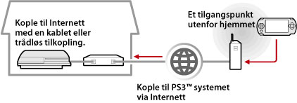

Nettverk > Bruke fjernspill (via internett)
Bruke fjernspill (via internett)
For å bruke denne funksjonen må du kanskje oppdatere systemprogramvaren på PS3™-systemet og PSP™-systemet.
Ved å bruke PSP™ systemet og et trådløst tilgangspunkt (som finnes gjennom en kommersiell trådløst referansepunkt (trådløs LAN) service), kan du kople deg til PS3™ systemet som er plassert hjemme via internett. For å bruke fjernspill hvis du ikke er hjemme, må PS3™ systemet settes i fjernspilltilkopling standby modus.

Tips
Metoden for å bruke en kommersiell trådløst referansepunkt (trådløs LAN) service og belastningen for slikt bruk, varierer avhengig av tjenesteleverandør. Kontakt tjenesteleverandøren for ytterligere detaljer.
Forberede (1) (PS3™ og PSP™-system)
For å bruke fjernspill den første gangen, må du registre (pare) PSP™ systemet med PS3™ systemet. Registrer systemet under  (Innstillinger) >
(Innstillinger) >  (Innstillinger for avstandsspilling) > [Registrer enhet].
(Innstillinger for avstandsspilling) > [Registrer enhet].
Forberede (2) (PS3™-system)
Sett PS3™-systemet til å gå i standbymodus. Du må sette [Fjernstart] til [På] slik at du kan slå på PS3™-systemet fra PSP™-systemet.
1. |
Utfør følgende trinn på PS3™-systemet:
|
|---|---|
2. |
Slå av PS3™-systemet. |
 (Brukere).
(Brukere). (Slå av systemet) for å slå av systemet og sette det i standbymodus. Kontroller at strømindikatoren lyser rødt.
(Slå av systemet) for å slå av systemet og sette det i standbymodus. Kontroller at strømindikatoren lyser rødt.Tips
For detaljer om innstillingene beskrevet i trinn 1, se (Innstillinger) > (Avstandsspill innstillinger) > [Fjernstart] i denne manualen.
Forberede (3) (PSP™-system)
Opprett en nettverksforbindelse for å kople til PSP™ systemet til tilgangspunktet. For å bruke fjernspill via internett, kan du bruke et tilgangspunkt som et kommersielt trådløst referansepunkt (trådløs LAN) tjeneste. For detaljer, henvis til brukerhåndboken for PSP™-systemet.
Bruke fjernspill
1. |
På PSP™-systemet velger du |
|---|---|
2. |
Velg [Connect via Internet]. |
3. |
Fra listen over tilkoblinger, velg tilkoblingen for det tilgangspunktet som skal brukes for avstandsspilling. |
4. |
Angi PlayStation®Network påloggings-IDen og passordet for kontoen som brukes på PS3™-systemet.
|
 (Nettverk) >
(Nettverk) >  (Avstandsspill).
(Avstandsspill).
Avslutte fjernspill
Trykk på PS-knappen (HOME-knappen) på PSP™-systemet, og velg [Quit Remote Play] > [Quit and Turn Off the PS3™ System].
Tips
Velg [Quit Without Turning Off the PS3™ System] hvis du bruker PS3™-systemet til å kopiere filer, eller bakgrunnsnedlastning og andre oppgaver som krever at systemet er slått på.
Bruke fjernspill via internett
Det er ikke sikket at du er i stand til å bruke fjernspill via internett avhengig av hvilket nettverksutstyr som brukes. Hvis dette skjer, kontroller følgende informasjon.
- Bruk [Test for internettforbindelse] i
 (Nettverksinnstillinger) under (Innstillinger) for å kontrollere at PSP™ systemet kan koples til internett og PlayStation®Network.
(Nettverksinnstillinger) under (Innstillinger) for å kontrollere at PSP™ systemet kan koples til internett og PlayStation®Network. - Hvis ruteren som brukes ikke støtter UPnP, aktiver ruterens UPnP funksjon.
- Hvis ruteren som brukes ikke støtter UPnP, må du sette ruterens ports fremsending for å tillate kommunikasjon med PS3™ systemet fra internett. Portnummeret som brukes av fjernspill er TCP: 9293. For informasjon om innstilling av dette valget, henvis til instruksjonene som følger med ruteren.
- Portfremsending er en funksjon for fremsending av signaler som kommer til en spesiell port (inngang) til en annen spesifisert port. Dette henvises også til som "portkartlegging" eller "adressekonvertering".
- Hvis PS3™-systemet er tilkoplet til internett via to eller flere rutere, er det ikke sikkert at kommunikasjonen fungerer skikkelig.
Tips
- En ruter er en enhet som lar flere enheter dele en enkelt internettlinje.
- Kommunikasjon kan være begrenset avhengig av sikkerhetsfunksjoner som er levert med ruteren og tjenesteleverandøren av internett. Se instruksjonene som er levert sammen med nettverksutstyret og informasjonen fra tjenesteleverandøren av internett.